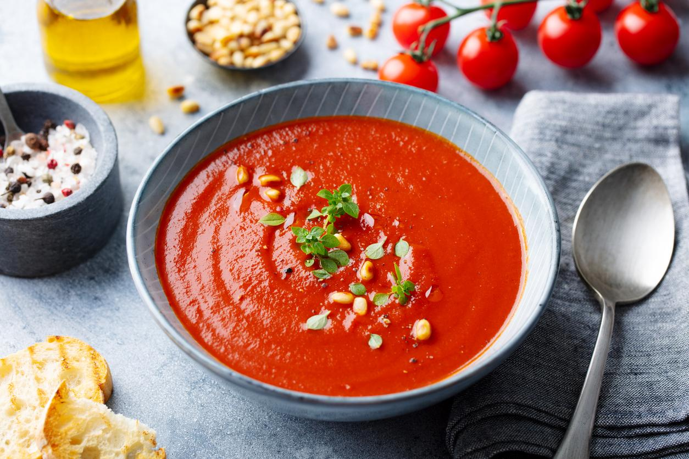

Ingredientes
- 4 tomates grandes
- 1 cebolla
- 1 diente de ajo
- 1 taza de caldo de verduras
- Sal y pimienta al gusto
- Un poco de crema de leche (opcional)
Instrucciones
- En una olla, sofríe la cebolla y el ajo hasta que estén dorados.
- Agrega los tomates picados y cocina hasta que se ablanden.
- Vierte el caldo de verduras y cocina por 15 minutos.
- Licúa la mezcla hasta obtener una crema suave.
- Sazona con sal y pimienta y agrega un poco de crema de leche si lo deseas.
- Sirve caliente.